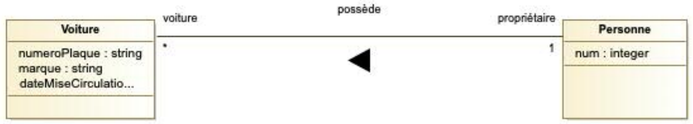
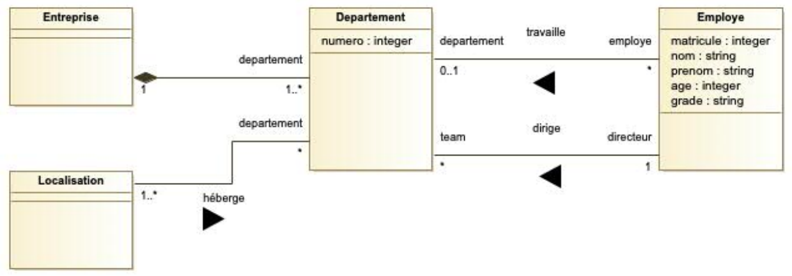
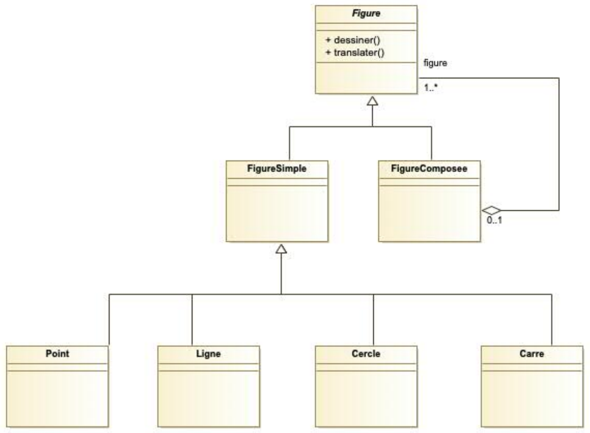
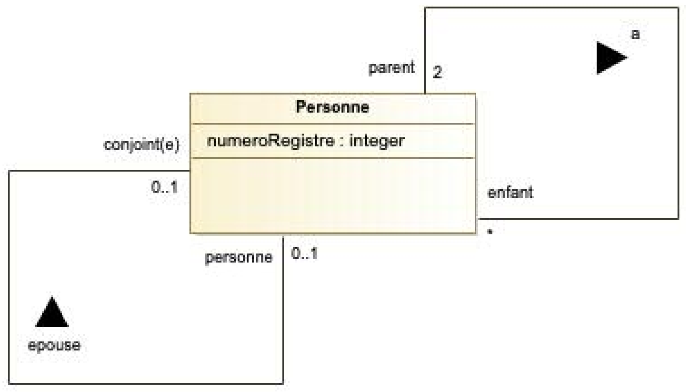
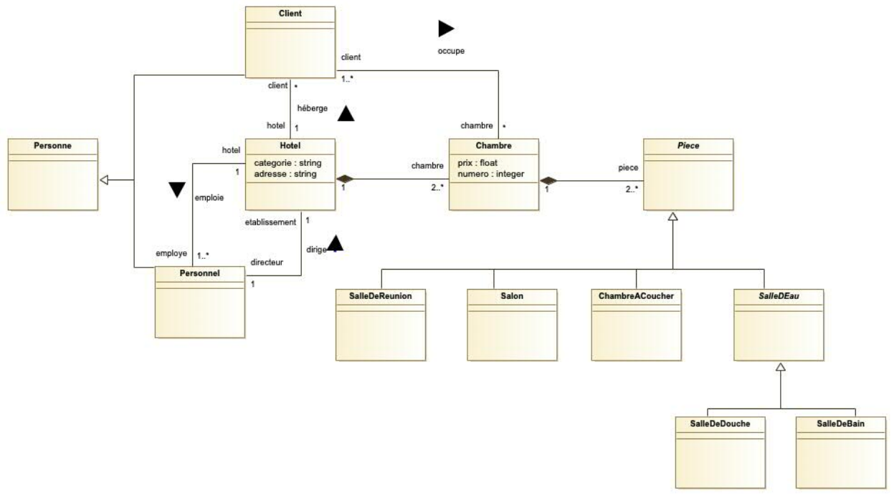
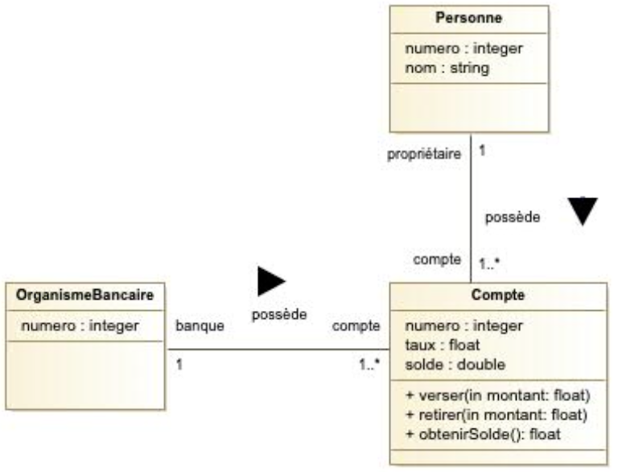

7 Practical Exercises: OCL Constraints
This chapter provides a series of practical exercises to apply the concepts of the Object Constraint Language (OCL) to UML Class Diagrams. Each exercise presents a problem description and a UML model, followed by a detailed solution explaining the OCL constraints used to enforce the business rules.
7.0.1 Exercise 1: Uniqueness of an Identifier
Problem: Using the diagram for people and cars, write an OCL constraint to guarantee that each person has a unique identification number (num) across all instances of the Personne class[cite: 24].

Correction Details:
The goal is to ensure that the num attribute is unique for every person in the system[cite: 28]. In OCL, this can be expressed in two equivalent ways[cite: 29].
Formulation 1: Using
isUnique()[cite: 30] This is the most direct and readable way to express the constraint. TheisUnique()operation checks if a given property is unique for all elements in a collection.context Personne inv pKeyPersonne: Personne.allInstances()->isUnique(num)- Explanation: This invariant states that for the entire collection of
Personne.allInstances(), the value of thenumattribute must be unique for each instance[cite: 32].
- Explanation: This invariant states that for the entire collection of
Formulation 2: Using
forAll()[cite: 34] This formulation uses the universal quantifierforAll()to express the same logic by comparing every pair ofPersonneinstances.context Personne inv pKeyPersonne: Personne.allInstances()->forAll(p1, p2 | p1 <> p2 implies p1.num <> p2.num )- Explanation: This invariant iterates over all possible pairs of
Personneinstances (p1andp2)[cite: 37]. It states that for all pairs, ifp1andp2are different objects, then theirnumattributes must also be different[cite: 37].
- Explanation: This invariant iterates over all possible pairs of
Key Concepts Illustrated:
- Context: The
context Personnedeclaration specifies that the constraint applies to thePersonneclass[cite: 31]. - Invariant (
inv): An invariant is a rule that must always be true for all instances of a class throughout their lifetime[cite: 25]. allInstances(): A class-level operation that returns a collection of all instances of that class in the system[cite: 31, 36].- Collection Operations: This exercise showcases two fundamental collection operations:
isUnique()for a direct check [cite: 31] andforAll()for expressing complex logical conditions on all elements[cite: 36].
7.0.2 Exercise 2: Uniqueness Within a Group
Problem: For the company organization model, an employee’s ID number (matricule) must be unique within their department, but not necessarily across the entire company[cite: 59]. Write an OCL constraint to enforce this rule.

Correction Details:
The key to this problem is choosing the correct context. The constraint is about the uniqueness of employees within a department, so the most logical context is Departement[cite: 72].
Correct Solution: Context
Departement[cite: 68] This approach is simple and directly models the requirement[cite: 70]. It evaluates the constraint for each department individually[cite: 72]. An idiomatic way to write this is usingisUnique():context Departement inv pKeyEmploye: self.employe->isUnique(matricule)The provided source also shows an equivalent formulation using
forAll[cite: 70]:ocl context Departement inv pKeyEmploye: self.employe->forAll(e1, e2 | e1 <> e2 implies e1.matricule <> e2.matricule)- Explanation: For each instance of
Departement(self), we navigate theemployeassociation to get the collection of employees in that department. We then ensure that allmatriculeattributes within that collection are unique[cite: 71].
- Explanation: For each instance of
Key Concepts Illustrated:
- Choosing the Right Context: This is the most important lesson. Placing the invariant in the
Departementcontext radically simplifies the expression and makes the intent clear[cite: 72]. - Navigation: The expression
self.employedemonstrates navigation across an association from an instance of one class to a collection of related instances[cite: 70]. - Scoped Uniqueness: This exercise contrasts with the first one by showing how to enforce uniqueness within a specific scope (a department) rather than globally.
7.0.3 Exercise 3: Preventing Circular Composition
Problem: In the geometric figures model, a composite figure (FigureComposee) is made up of other figures. It is crucial to prevent circular compositions, where a figure could contain itself, either directly or indirectly[cite: 91]. Write an OCL constraint to forbid this.

Correction Details:
This problem requires two levels of solution: one for direct cycles and a more advanced one for indirect cycles.
Solution 1: Preventing Direct Cycles This constraint prevents a
FigureComposeefrom including itself in its immediate list of sub-figures[cite: 98, 101].context FigureComposee inv circularComposition: not self.figure->includes(self)- Explanation: For any instance of
FigureComposee(self), this invariant checks the collection of its direct sub-figures (self.figure) and asserts that the collection does not include the instance itself[cite: 99].
- Explanation: For any instance of
Solution 2: Preventing Indirect Cycles (Advanced) The first solution is insufficient because it doesn’t prevent A from containing B, which in turn contains A[cite: 102]. To solve this, we need a recursive query to find all sub-figures at any level of nesting (the transitive closure)[cite: 103, 114].
context FigureComposee -- Define a helper function to get all nested sub-figures def: allSubFigures(): Set(Figure) = self.figure->union( self.figure->select(f | f.oclIsTypeOf(FigureComposee)) ->collect(f | f.allSubFigures()) ->flatten() ) -- The invariant uses the helper function inv noCircularComposition: not self.allSubFigures()->includes(self)- Explanation: We first define a helper operation
allSubFigures()that recursively collects all direct figures and all sub-figures of any composite children[cite: 114]. The invariantnoCircularCompositionthen uses this function to check thatselfis not present in the complete set of its descendants, thus preventing all direct and indirect cycles[cite: 113, 114].
- Explanation: We first define a helper operation
Key Concepts Illustrated:
includes(): A collection operation that checks for the presence of an element.- Helper Operations (
def): OCL allows the definition of custom, reusable queries, which is essential for complex logic like recursion[cite: 103]. - Recursion and Transitive Closure: The
allSubFigures()operation is a classic example of using recursion to navigate a hierarchical structure to find all connected nodes[cite: 114].
7.0.4 Exercise 4: Constraining Family Relationships
Problem: Using the family links diagram, impose a constraint to forbid a person from being both a parent and a spouse to the same other person[cite: 125].

Correction Details:
The constraint needs to ensure that the set of a person’s children and the set of a person’s spouses are disjoint (have no common elements)[cite: 126].
context Personne inv notChildParentsMarriage:
self.conjoint->excludesAll(self.enfant)Explanation:
self: Refers to the instance of thePersonneclass on which the constraint is being evaluated.conjoint: Refers to the association that links a person to their spouse(s). It returns a collection ofPersonneobjects.enfant: Refers to the association that links a person to their children.excludesAll(): This OCL collection operation returnstrueif the first collection (the spouses) contains none of the elements from the second collection (the children).
Key Concepts Illustrated:
- Reflexive Association: The diagram shows the
Personneclass related to itself. OCL navigates these associations using the provided role names (conjoint,enfant). - Set Operations: OCL provides a rich set of operations for working with collections, including
excludesAll(), which is used here to ensure two sets are disjoint.
7.0.5 Exercise 5: Hotel
Problem: A hotel is composed of at least two “rooms”. Each room consists of several parts such as bedrooms, washrooms, living rooms, and meeting rooms. Each room has a minimum of one bedroom and one washroom. The washrooms can be bathrooms (with a tub) or shower rooms. A room is also characterized by a price and a number. The hotel itself has a category, and an address. Furthermore, the hotel can host clients, employ staff, and is managed by a staff member.

Correction Details:
The problem requires two OCL invariants to ensure the correct composition of a hotel room (Chambre).
Constraint 1: Each room must have at least one bedroom. This constraint can be formulated in two ways. The first filters the collection of parts and checks its size, while the second (and more efficient) way simply checks for the existence of such a part.
Formulation A: Using
selectandsizecontext Chambre inv minChambreACoucher: self.piece->select(p | p.oclIsTypeOf(ChambreACoucher))->size() >= 1Formulation B: Using
existscontext Chambre inv minChambreACoucher: self.piece->exists(p | p.oclIsTypeOf(ChambreACoucher))Constraint 2: Each room must have at least one washroom. Similarly, this constraint verifies that at least one of the room’s parts is a
SalleDEau(which is a superclass forSalleDeBainandSalleDeDouche).Formulation A: Using
selectandsizecontext Chambre inv minSalleDEau: self.piece->select(p | p.oclIsTypeOf(SalleDEau))->size() >= 1Formulation B: Using
existscontext Chambre inv minSalleDEau: self.piece->exists(p | p.oclIsTypeOf(SalleDEau))
Key Concepts Illustrated:
- Navigation: The constraints start from an instance of
Chambre(self) and navigate thepieceassociation to access the collection of parts. oclIsTypeOf(): This operation is used to filter a collection of objects based on their specific class.select()vs.exists(): This exercise highlights two common ways to check for the presence of an item in a collection.select()creates a new sub-collection, whileexists()returns a simple boolean, which is often clearer and more performant for this type of rule.
7.0.6 Exercise 6: Banking System
Problem: Model a banking system where people own accounts in banking organizations. Enforce several business rules using OCL, including data integrity invariants (unique IDs, balance limits), initial attribute values, pre- and post-conditions for account operations (deposit, withdrawal), and queries to retrieve client information.

Correction Details:
This comprehensive exercise uses multiple OCL features to define the behaviour and constraints of a banking system.
1. Invariants (Data Integrity Rules)
These rules must always be true for the system to be in a valid state.
Unique account number per bank:
context OrganismeBancaire inv pKeyCompte: self.compte->isUnique(numero)Explanation: For each bank, the set of its accounts must have unique numbers.
The balance of an account cannot exceed 1,000,000:
context Compte inv creditMax: self.solde <= 1000000The interest rate must be strictly positive:
context Compte inv tauxPositif: self.taux > 0A person’s ID must be unique:
context Personne inv idUnique: Personne.allInstances()->isUnique(numero)
2. Initial and Derived Values
OCL can specify initial values for attributes or define attributes whose values are derived from others.
The balance of a new account is initialized to 0:
context Compte::solde: Real init: 0The interest amount is derived from the balance and rate:
context Compte::interets: Real derive: solde * taux
3. Pre- and Post-conditions (Operation Contracts)
These define the “contract” for an operation: what must be true before it runs (pre) and what must be true after it finishes (post).
Deposit money (
verser):context Compte::verser(montant: Real) pre montantPositif: montant > 0 post soldeMisAJour: self.solde = self.solde@pre + montantExplanation: The precondition requires the deposit amount to be positive. The postcondition guarantees the new balance is the old balance (
@pre) plus the amount.Withdraw money (
retirer):context Compte::retirer(montant: Real) pre montantPositif: montant > 0 pre soldeSuffisant: self.solde >= montant post soldeMisAJour: self.solde = self.solde@pre - montantExplanation: The preconditions require a positive amount and sufficient funds. The postcondition guarantees the balance is correctly updated.
Get balance (
obtenirSolde):context Compte::obtenirSolde(): Real post resultatCorrect: result = self.solde post soldeInchange: self.solde = self.solde@preExplanation: The postconditions guarantee the returned value (
result) is the current balance and that the operation did not change the state of the balance.
4. Queries (Helper Definitions)
OCL can be used to define reusable queries on the model.
Get a list of all distinct client first names:
context Personne def: listePrenomsDifferents(): Set(String) = Personne.allInstances()->collect(prenom)->asSet()Explanation: This defines a function that gets all
Personneinstances, collects their first names (prenom), and converts the resulting collection into aSetto ensure uniqueness.
Key Concepts Illustrated:
- Invariants (
inv): Rules that define a stable and consistent state for the model’s objects. - Initializers (
init): Specifies the state of an attribute upon an object’s creation. - Derived Values (
derive): Defines an attribute whose value is automatically calculated from other properties. - Design by Contract (
pre,post): A powerful method for specifying the precise behaviour of operations. @pre: A keyword used in post-conditions to refer to the value of a property before the operation was executed.result: A keyword used in post-conditions to refer to the value returned by the operation.- Querying (
def): Using OCL not just for constraints, but to define reusable functions that can be called to retrieve information from the model.